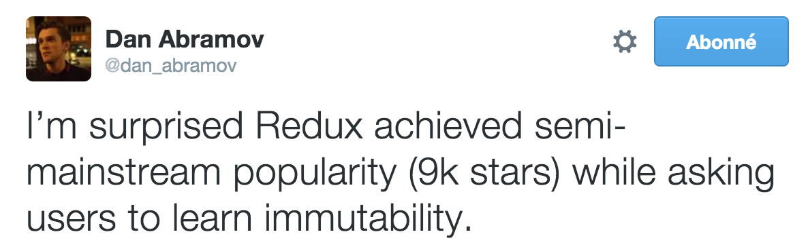

react-es6-redux
A perfect match
by Christophe Rosset / @topheman
parisjs meetup - jan 2016
Quick demo
Project Genesis
Original Goal
- try out React & ES6
- try
isomorphicuniversal JavaScript
Steps
- feb 2015: backend proxy to github (topheman-apis-proxy)
- march 2015: first front-end version
- april 2015: first isomorphic version
- flux implementation ?...
- oct 2015: upgrade to React v0.14 (mainly react-router v1.0.0-rc)
- nov 2015: add Redux support (finally some flux-like implementation)
- still in progress ...
Constraints
Even on a side project,
act with the same kind of constraints as on a bigger project
Constraints
Features
- async calls to external API
- mobile friendly (bundle weight, http requests ...)
(~ real life usecase ...)
Constraints
Automation / Build process
- build in on step (
npm/webpack/gulp) - build in specific environment (dev / prod / mock / ci ...)
Constraints
Automation / CI / Tests
- unit tests (
mocha/jsdom) - e2e tests (
protractor/jasmine) - Travis CI
- Sauce Labs
Constraints
Development Tooling
- ES6 transpilation (
Babel+webpack) - CSS preprocessing (
SASS+webpack) - Linter (
eslint+eslint-config-airbnb) - Sourcemaps (
webpack+*) - Hot-reload (
webpack+*) - Redux-Devtools
Constraints
Documentation
- README + Wiki
- Clear releases (with version, changelog ...)
- Online demo (with both production and development version)
Libraries
reactredux-
react-router/redux-router
(state of the router kept in redux store) redux-thunkredux-devtools- ...
Dev Workflow
Demo: Setup / Launch
$ git clone https://github.com/topheman/react-es6-redux.git
$ cd react-es6-redux
$ npm install
$ npm run webpack-dev-simple
before starting ?... Redux in 20 lines

Redux in 20 lines
import { createStore } from 'redux';
const store = createStore((state = 0, action) => {
switch (action.type) {
case 'INCREMENT':
return state + 1;
default:
return state;
}
});
store.subscribe(() => console.log(store.getState()));
store.dispatch({type: 'INCREMENT'});
store.dispatch({type: 'INCREMENT'});
store.dispatch({type: 'INCREMENT'});
store.dispatch({type: 'INCREMENT'});
store.dispatch({type: 'INCREMENT'});
// outputs 1, 2, 3, 4, 5
Demo
- Hot-reload (keeping state)
- Components
- Reducers
- Redux-Devtools
- Time travel
Mock Mode
npm run webpack-mock
Used in tests to provide fixtures to http client
Homemade, combining:
nock(to record http requests)super-agent-mocker
What I've learned
- Immutability
- Functional Programming
- ES6 Syntax
- Some webpack tricks ...

(bonus)
Tips & tricks
Next
- Improve unit tests (Travis CI)
- Switch to
redux-simple-router - Upgrade to Babel 6 (not yet ready)
Questions ?
Resources
- Dan Abramov at React Europe (Redux & React hot loader)
- Redux in 30 lessons by Dan Abramov on egghead.io
- Functional programming in JS by @mpjme - videos serie
redux.js.org - github.com/rackt
Christophe Rosset - @topheman